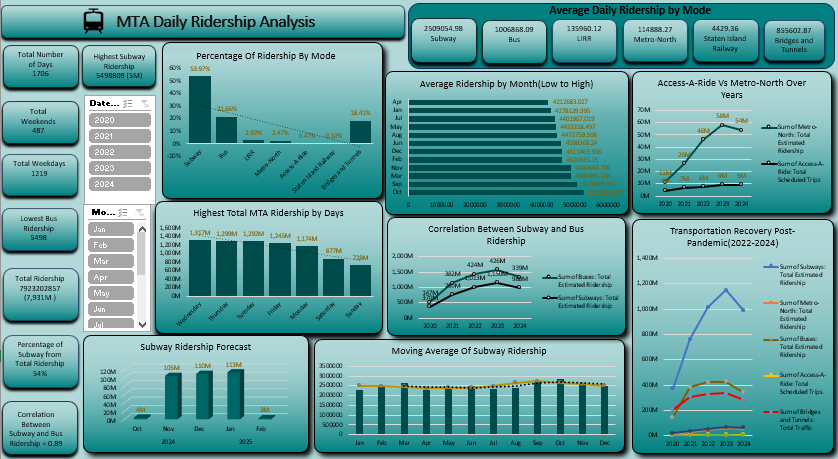

Introduction:
The MTA Daily Ridership Analysis dashboard provides a comprehensive overview of public transportation usage trends across multiple transit modes in New York City. This analysis offers a detailed view into how ridership has evolved from 2020 to 2024, evaluating recovery patterns, daily usage variations, and correlations across subway, bus, Metro-North, and Access-A-Ride services.
Data Preparation:
- Data Loading:
The dataset is loaded into Power Query for further analysis.
- Data Type Adjustment:
Data types are modified to ensure consistency and accuracy in subsequent analyses.
- Column Removal:
The "neighbourhood" column, containing only null values, is removed to streamline the dataset.
- Price Formatting:
The price column is formatted as currency to enhance readability.
- Date Extraction:
Year and month are extracted from the "last review date" column to facilitate temporal analysis.
Pivot Tables:
Pivot tables were created to summarize and extract key metrics from call center data:
- Transport Mode vs. Average Daily Ridership:
Provides insights into how many people use each MTA transport mode on average (Subway, Bus, LIRR, Metro North, Access-A-Ride).
- Total Number of Days Used by Transport Type:
Shows how many days each transport mode was active or recorded during the analysis period.
- Average Daily Ridership by Day Type:
Highlights how ridership differs between Weekdays and Weekends.
- Total Estimated Ridership per Mode:
Summarizes the total passenger count for each transport type over the entire period.
- Daily Ridership % by Day of the Week:
Displays the percentage distribution of weekly ridership across Sunday to Saturday.
Measures/KPIs:
- Total Days Analyzed:
Total number of calendar days covered in the dataset.
- Total Days Subway & Bus Used:
Number of days subway and bus systems were operational.
- Total Estimated Ridership:
Total sum of all passengers from all five transport modes.
- Average Daily Ridership:
The average number of people traveling each day across all modes.
Pivot Charts:
Pivot charts are generated to visually represent key findings from pivot tables:
- Percentage of Ridership by Mode(Column Chart):
Shows the percentage of ridership by mode, with subways leading, followed by buses, then bridges & tunnels, while other modes account for minimal usage.
- Average Ridership by Month(Bar Chart):
Compares the average ridership for each month, highlighting monthly variations and travel patterns.
- Day-wise Ridership (Sun to Sat):
Visualizes which day of the week had the highest or lowest ridership share.
- Access-A-Ride Vs Metro-?North Year-wise Trend (Line Chart):
Compares yearly ridership trends between Access-A-Ride and Metro-North to show differences in growth and recovery patterns.
- Correlation between Subway and Bus Ridership (Line Chart):
Reveals the correlation between subway and bus usage patterns.
- Subway Forecast (3D Column Chart):
Forecasts future subway ridership based on linear trends.
- Moving Average Of Subway Ridership(Column Chart):
Shows monthly moving averages of MTA subway ridership, highlighting seasonal peaks and dips across the year.
- Transportation Recovery Post-Pandemic 2022 - 2024(Line Chart)::
Illustrates the post-pandemic recovery trends across different transportation modes over the years.
Results:
- Mode Comparison:
Subways and buses account for the majority of ridership, while Metro-North and Access-A-Ride contribute the least, indicating lower demand.
- Usage Frequency:
Subways and buses are utilized almost daily, reflecting strong public reliance, whereas Metro-North and Access-A-Ride show less frequent usage.
- Weekday Trends:
Analysis shows ridership is highest midweek (especially Wednesday and Thursday), reflecting commuter demand, while Sunday records the lowest usage, indicating reduced weekend travel.
- Tools Excel
- Stages Data Preparation Pivot Tables Measure / KPIs Pivot Charts
- Go to Github!
Click on image to view the project